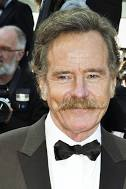

Credits
Bryan Cranston - Walter White
Bryan Lee Cranston (born March 7, 1956) is an American actor. After taking minor roles in television he established himself as a leading actor in both comedic and dramatic works on stage and screen.
Arron Paul - Jesse Pinkman

Aaron Paul (born Aaron Paul Sturtevant; August 27, 1979) is an American actor and producer. He is best known for portraying Jesse Pinkman in the AMC series Breaking Bad (2008–2013), for which he won several awards, including three Primetime Emmy Awards for Outstanding Supporting Actor in a Drama Series, a joint-record since its separation into comedy and drama, as well as a Golden Globe Award nomination.
Anna Gunn - Skyler White

Anna Kathryn Gunn[1] (born August 11, 1968)[2] is an American actress. She is known for playing Martha Bullock on the HBO Western series Deadwood (2004–2006) and Skyler White on the AMC crime drama series Breaking Bad (2008–2013). Her accolades include two Primetime Emmy Awards and a Screen Actors Guild Award.
Dean Norris - Hank Schrader

Dean Joseph Norris born April 8, 1963 is an American actor. He is known for playing Hank Schrader on the AMC series Breaking Bad (2008–2013), James "Big Jim" Rennie on the CBS series Under the Dome (2013–2015), and Clay "Uncle Daddy" Husser on the TNT series Claws (2017–2022). Throughout his career, he has amassed over 154 credits across film and television.
RJ Mitte - Walter Whilte Jr.
Roy Frank "RJ" Mitte III (/ˈmɪti/; born August 21, 1992) is an American actor and producer. Born and raised in Jackson, Mississippi, Mitte was diagnosed with cerebral palsy when he was three. He moved to Hollywood in 2006, and worked with a personal talent manager to find acting opportunities where his disability could educate viewers. After making cameos in sitcoms, he was cast in his breakthrough role as Walter White Jr. on the AMC crime drama series Breaking Bad (2008–2013).